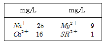
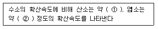
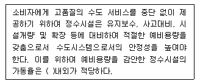
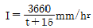
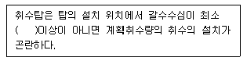
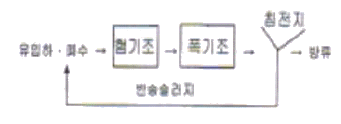
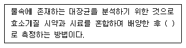

수질환경기사 (2013-03-01 기출문제)
1과목: 수질오염개론
1. 산(acid)과 염기(base)의 관한 설명으로 틀린 것은?
- 산은 활성을 띤 금속과 반응하여 원소상태의 수소를 내어 놓는다.
- 산의 용액을 전기분해하면 음극에서 원소상태의 수소가 발생한다.
- 대부분의 비금속은 염기성산화물로서 산에 녹아 염기성용액을 형성한다.
- 염기는 전자쌍을 주는 화학종으로, 산은 전자쌍을 받는 화학종으로 구분할 수 있다.
(정답률: 62%)

2. 다음의 이상적 완전혼합형 반응조내 흐름(혼합)에 관한 설명 중 틀린 것은?
- 분산수(dispersion NO)가 0에 가까울수록 완전혼합 흐름상태라 할 수 있다.
- Morrill지수의 값이 클수록 이상적인 완전혼합 흐름상태에 가깝다.
- 분산(Variance)이 1일 때 완전혼합흐름상태라 할 수 있다.
- 지체시간(lag time)이 0 이다.
(정답률: 74%)
3. 호소수의 성층현상을 설명한 것으로 틀린 것은?
- 성층현상의 결과 생긴 층을 수면으로부터 표수층, 수온약층, 심수층 이라고 부른다.
- 여름철 성층현상은 봄철의 기상조건에 따라 달라지는데 봄철 기온이 높고 바람이 약할 경우에는 성층이 늦게 이루어진다.
- Hypolimnion층은 깊이에 따라 온도변화가 심한 층을 말하며 통상 수심이 1m 내려감에 따라 약 1℃이상의 수온차가 생긴다.
- 성층현상은 주로 봄, 가을에 전도현상이 발생하여 수직혼합이 활발히 진행되므로 호소수의 수질이 악화된다.
(정답률: 72%)
4. 다음 수질을 가진 농업용수의 SAR값으로 판단할 때 Na+가 흙에 미치는 영향은 어떻다고 할 수 있는가? (단, 수질농도는 Na+=230mg/L, Ca2+=60mg/L, Mg2+=36mg/L, PO43-=1500mg/L, Cl-=200mg/L 이다. 원자량 : 나트륨 23, 칼슘 40, 마그네슘 24, 인 31)
- 영향이 적다.
- 영향이 중간정도이다.
- 영향이 비교적 높다.
- 영향이 매우 높다.
(정답률: 73%)
5. 지표수와 비교하여 지하수의 일반적인 특성인 것은?
- 유기물의 함량이 비교적 높다.
- 용해된 염류의 농도가 비교적 낮다.
- 자정작용의 속도가 빠르다.
- 온도가 비교적 균일하다.
(정답률: 60%)
6. 최종 BOD가 500mg/L이고, 탈산소계수(자연대수를 base로 함)가 0.1/day인 물의 5일 소모 BOD는?
- 175mg/L
- 197mg/L
- 224mg/L
- 255mg/L
(정답률: 67%)
7. 다음의 수질 분석결과표 내의 경도유발물질로 인한 경도(mg/L as CaCO3)는? (단, 원자량: Ca는 40, Mg는 24, Na는 23, Sr는 88)

- 약 63
- 약 79
- 약 87
- 약 93
(정답률: 70%)
8. 하천 및 호수의 부영양화를 고려한 생태계모델로 정적 및 동적인 하천의 수질 및 수문학적 특성을 광범위하게 고려한 수질관리모델은?
- Vollenwider
- QUALE 모델
- WQRRS 모델
- WASPO 모델
(정답률: 71%)
9. 다음은 Graham의 기체법칙에 관한 내용이다. ( )안에 맞는 내용은? (단, Cl2분자량은 71.5이다.)

- ① 1/8, ② 1/4
- ① 1/8, ② 1/9
- ① 1/4, ② 1/8
- ① 1/4, ② 1/6
(정답률: 77%)
10. 어느 공장폐수의 BOD를 측정하였을 때 초기 DO는 8.4mg/L이고, 이를 20℃에서 5일간 보관한 후 측정한 DO는 3.6 mg/L이었다. 이 폐수를 BOD제거율이 90%가 되는 활성슬러지 처리시설에서 처리하였을 경우 방류수의 BOD(mg/L)는? (단, BOD 측정시의 희석배율은 50배이다.)
- 12
- 16
- 21
- 24
(정답률: 60%)
11. 반감기가 3일인 방사성 폐수의 농도가 10mg/L 라면 감소속도정수(day-1)는? (단, 1차 반응속도 기준, 자연대수 기준)
- 0.132
- 0.231
- 0.326
- 0.430
(정답률: 63%)
12. 어떤 하천수의 수온은 10℃이다. 20℃의 탈산소계수 K(상용대수)가 0.1/day일 때 최종 BOD에 대한 BOD6의 비는? (단, KT=K20×1.047(T-20), BOD6/최종 BOD)
- 0.42
- 0.58
- 0.63
- 0.83
(정답률: 65%)
13. 식초산(CH3COOH) 1500mg/L 용액의 pH가 3.4 이라면 이 용액의 전리상수는?
- 5.14×10-6
- 6.34×10-6
- 7.74×10-6
- 8.54×10-6
(정답률: 58%)
14. 적조현상에 의해 어패류가 폐사하는 원인과 가장 거리가 먼 것은?
- 적조생물이 어패류의 아가미에 부착하여
- 적조류의 광범위한 수면만 형성으로 인해
- 치사성이 높은 유독물질을 분비하는 조류로 인해
- 적조류의 사후분해에 의한 수중 부패 독의 발생으로 인해
(정답률: 76%)
15. 거주 인구가 10,000명인 신시가지의 오수를 처리장에서 처리 후 인접 하천으로 방류하고 있다. 하천으로 배출되는 평균 오수 유량은 60m3/hr, BOD농도는 20mg/L라 할 때, 오수처리장의 처리효율은? (단, BOD 인구당량은 50g/인ㆍ일로 가정)
- 약 92.5%
- 약 94.2%
- 약 96.5%
- 약 98.1%
(정답률: 57%)
16. 콜로이드에 관한 설명으로 틀린 것은?
- 콜로이드 입자의 질량은 매우 작아서 중력의 영향은 중요하지 않다.
- 일부 콜로이드 입자들의 키기는 가시광선 파장 보다 키기 때문에 빛의 투과를 간섭한다.
- 콜로이드 입자들은 모두 전하를 띠고 있다.
- 콜로이드의 입자는 매우 작아 보통의 반투막을 통과한다.
(정답률: 64%)
17. 다음 중 박테리아 세포에서 발견되는 기관으로 호흡에 관여하는 효소가 존재하는 것은?
- 메소좀(mesosome)
- 볼루틴 과립(volutin granules)
- 협막(capsule)
- 리보좀(ribosomes)
(정답률: 61%)
18. μ(세표비증가율)가 μmax 80%일 때 기질농도(S80)와 μmax 20%일 때의 기질농도(S20)와의 (S80/S20)비는? (단, 배양기내의 세포비증가율은 Monod식이 적용)
- 4
- 8
- 16
- 32
(정답률: 66%)
19. 박테리아(C5H7O2N) 10g/L을 COD로 환산하면 몇 g/L 인가? (단, 질소는 암모니아로 전환됨)
- 10.3g/L
- 12.1g/L
- 14.2g/L
- 16.8g/L
(정답률: 67%)
20. 시중에 판매되는 농황산의 비중이 약 1.84, 농도는 96%(중량기준)정도이다. 이 농황산의 몰(mole/L)농도는?
- 56
- 32
- 26
- 18
(정답률: 58%)
2과목: 상하수도계획
21. 하수 원형 단면 관거의 장단점으로 틀린 것은?
- 안전하게 지지시키기 위한 모래기초 외의 별도의 기초공이 필요 없다.
- 공사기간이 단축된다.(일반적으로 내경 3000mm 정도 까지는 공장제품 사용 가능)
- 역학 계산이 간단하다.
- 공장제품 사용으로 접합부가 많아져 지하수의 침투량이 많아질 염려가 있다.
(정답률: 59%)
22. 정수시설 중 완속여과지에 관한 설명으로 틀린 것은?
- 여과지의 깊이는 하부집수장치의 높이에 자갈층 두께, 모래층 두께, 모래면 위의 수심과 여유고를 더하여 2.5∼3.5m를 표준으로 한다.
- 완속여과의 여과속도는 4∼5m/day를 표준으로 한다.
- 완속여과지의 모래층 두께는 70∼90cm를 표준으로 한다.
- 여과지의 모래면 위의 수심은 0.3∼0.6m를 표준으로 한다.
(정답률: 60%)
23. 다음은 정수시설의 계획정수량과 시설능력에 관한 내용이다. ( )안에 옳은 내용은?

- 55%
- 65%
- 75%
- 85%
(정답률: 71%)
24. 관거별 계획하수량을 정할 때 고려할 사항으로 틀린 것은?
- 오수관거에서는 계획1일최대오수량으로 한다.
- 우수관거에서는 계획우수량으로 한다.
- 합류식 관거에서는 계획시간최대오수량에 계획우수량을 합한 것으로 한다.
- 차집관거는 우천시 계획오수량으로 한다.
(정답률: 66%)
25. 하수관거시설인 우수토실의 우수월류위어의 위어길이(L)을 계산하는 식으로 맞는 것은? (단, L(m) : 위어길이, Q(m3/sec): 우수월류량, H(m) : 월류수심(위어길이간의 평균값)
- L=[Q/1.2H1/2]
- L=[Q/1.8H1/2]
- L=[Q/1.2H3/2]
- L=[Q/1.8H3/2]
(정답률: 62%)
26. 펌프의 토출유량은 1800m3/hr, 흡입구의 유속은 4m/sec일 때 펌프의 흡입구경(mm)은?
- 약 350
- 약 400
- 약 450
- 약 500
(정답률: 60%)
27. 용해성성분으로 무기물인 불소(처리대상물질)를 제거하기 위해 유효한 고도정수처리방법과 가장 거리가 먼 것은?
- 응집침전
- 골탄
- 이온교환
- 전기분해
(정답률: 62%)
28. 상수처리를 위한 응집지의 플록형성지에 대한 설명 중 틀린 것은?
- 플록형성지는 혼화지와 침전지 사이에 위치하고 침전지에 붙여서 설치한다.
- 플록형성시간은 계획정수량에 대하여 20∼40분간을 표준으로 한다.
- 플록형성지 내의 교반강도는 하류로 갈수록 점차 감소시키는 것이 바람직하다.
- 플록형성지에 저류벽이나 정류벽 등을 설치하면 단락류가 생겨 유효저류시간을 줄일 수 있다.
(정답률: 70%)
29. 계획취수량은 계획 1일 최대급수량의 몇 % 정도의 여유를 두고 정하는가?
- 5% 정도
- 10% 정도
- 15% 정도
- 20% 정도
(정답률: 63%)
30.

, 면적 3.0km2, 유입시간 6분, 유출계수C=0.65, 관내유속이 1m/sec 인 경우 관 길이 600m인 하수관에서 흘러나오는 우수량은? (단, 합리식 적용)- 64m3/sec
- 76m3/sec
- 82m3/sec
- 91m3/sec
(정답률: 50%)
31. 하수의 배제방식인 합류식, 분류식을 비교한 내용으로 틀린 것은?
- 관거오접: 분류식의 경우 철저한 감시가 필요하다.
- 관거내 퇴적: 분류식의 경우 관거내의 퇴적이 적으며 수세효과는 기대할 수 없다.
- 처리장으로의 토사유입: 분류식의 경우 토사의 유입은 있으나 합류식 정도는 아니다.
- 관거내의 보수: 분류식의 경우 측구가 있는 경우는 관리시간이 단축되고 충분한 관리가 가능하다.
(정답률: 47%)
32. 취수시설인 침사지에 관한 설명으로 틀린 것은?
- 표면부하율은 500∼800mm/min을 표준으로 한다.
- 지내 평균유속은 2∼7cm/sec를 표준으로 한다.
- 지의 상단높이는 고수위보다 0.6∼1m의 여유고를 둔다.
- 지의 유효수심은 3∼4를 표준으로 하고, 퇴사심도를 0.5∼1m로 한다.
(정답률: 70%)
33. 취수시설에 대한 설명으로 틀린 것은? (단, 하천수를 수원으로 하는 경우)
- 취수보는 안정된 취수와 침사효과가 큰 것이 특징이다.
- 취수보는 하천을 막아 계획취수위를 확보하여 안정된 취수를 가능하게 하기 위한 시설이다.
- 취수탑은 유황이 안정된 하천에서 대량으로 취수할 때 특히 유리한다.
- 일반적으로 취수보가 취수탑에 비해 경제적이다.
(정답률: 59%)
34. 하수관로에서 조도계수 0.014, 동수경사 1/100이고 관경이 400mm일 때 이 관로의 유량은? (단, 만관기준, Manning공식에 의함)
- 약 0.08m3/sec
- 약 0.12m3/sec
- 약 0.15m3/sec
- 약 0.19m3/sec
(정답률: 40%)
35. 하수처리시설인 일차침전지의 표면부하율 기준으로 옳은 것은?
- 계획1일최대오수량에 대하여 분류식의 경우 25∼20m3/m2ㆍday로 한다.
- 계획1일최대오수량에 대하여 분류식의 경우 15∼50m3/m2ㆍday로 한다.
- 계획1일최대오수량에 대하여 합류식의 경우 15∼25m3/m2ㆍday로 한다.
- 계획1일최대오수량에 대하여 합류식의 경우 25∼50m3/m2ㆍday로 한다.
(정답률: 56%)
36. 다음은 취수탑의 위치에 관한 내용이다. ( )안에 옳은 것은?

- 1m
- 2m
- 3m
- 4m
(정답률: 71%)
37. 상수도 펌프의 설치와 부속설비에 대한 설명으로 틀린 것은?
- 펌프의 흡입관은 공기가 갇히지 않도록 배관한다.
- 펌프의 토출관은 마찰손실이 작도록 고려하고 체크밸브와 제어벨브를 설치한다.
- 펌프의 흡수정은 펌프의 설치위치에 가급적 가까이 만들고 난류나 와류가 일어나지 않는 현상으로 한다.
- 흡입관은 가능한 한 길이를 짧게 하고 경사를 두지 않도록 한다.
(정답률: 58%)
38. 1분당 300m3의 물을 150m 양정(전양정)할 때 최고 효율점에 달하는 펌프가 있다. 이 때의 회전수가 1500rpm이라면 이 펌프의 비속도(비교회전도)는?
- 약 512
- 약 554
- 약 608
- 약 658
(정답률: 63%)
39. 지하수의 취수지점 선정에 관련한 설명 중 틀린 것은?
- 연해부의 경우에는 해수의 영향을 받지 않아야 한다.
- 얕은 우물인 경우에는 오염원으로부터 5m 이상 떨어져서 장래에도 오염의 영향을 받지 않는 지점이어야 한다.
- 복류수인 경우에는 오염원으로부터 15m 이상 떨어져서 장래에도 오염의 영향을 받지 않는 지점이어야 한다.
- 복류수인 경우에 장래에 일어날 수 있는 유로변화 또는 하상저하 등을 고려하고 하천개수계획에 지장이 없는 지점을 선정한다.
(정답률: 69%)
40. 다음 중 불용해성성분 중 치리대상항목이 조류인 경우 이를 처리항기 위한 고도정수처리방법과 가장 거리가 먼 것은?
- 활성탄
- 막여과
- 마이크로스트레이너
- 부상분리
(정답률: 54%)
3과목: 수질오염방지기술
41. 활성슬러지 공법을 이용한 폐수처리장에서 반송슬러지 농도가 8000mg/L이고, 폭기조에 MLSS 농도를 3000mg/L로 유지시키고자 한다면 슬러지반송률(%)은? (단, 유입수 SS농도는 고려하지 않음)
- 약 50%
- 약 55%
- 약 60%
- 약 65%
(정답률: 62%)
42. 하수처리에 관련된 침전현상(독립, 응집, 간섭, 압밀)의 종류 중 “간섭침전”에 관한 설명과 가장 거리가 먼 것은?
- 생물학적 처리시설과 함께 사용되는 2차 침전시설내에서 발생한다.
- 입자 간의 작용하는 힘에 의해 주변 입자들의 침전을 방해하는 중간 정도 농도의 부유액에서의 침전을 말한다.
- 입자 등은 서로 간의 간섭으로 상대적 위치를 변경시켜 전체 입자들이 한 개의 단위로 침전한다.
- 함께 침전하는 입자들의 상부에 고체와 액체의 경계면이 형성된다.
(정답률: 53%)
43. 활성슬러지 방식으로 유량 Q(m3/일), BOD농도 C(mg/L)의 침출수를 MLSS농도 3000mg/L, BOD-MLSS 부하 0.2(kg/kgㆍ일)로 처리할 계획을 세웠으나 실제 침출수가 유량 1.1Q(m3/일), BOD농도는 2C(mg/L)가 되어 MLSS농도를 6000mg/L로 처리하였다면 이때의 BOD-MLSS부하는? (단, 반응조 부피는 변화 없음)
- 0.14kg/kgㆍ일
- 0.22kg/kgㆍ일
- 0.32kg/kgㆍ일
- 0.41kg/kgㆍ일
(정답률: 54%)
44. 1일 폐수배출량이 500m3이고 BOD가 300mg/L, 질소(N)가 5mg/L, SS가 100mg/L인 폐수를 활성 슬러지법으로 처리하고자 한다. 공급해야 할 요소[CO(NH2)2]의 부족량은 하루에 몇 kg인가? (단, BOD:N:P의 비율은 100:5:1로 가정)
- 약 8.4
- 약 10.7
- 약 13.2
- 약 16.3
(정답률: 34%)
45. Freundlich 등온 흡착식(X/M=KCe1/n)에 대한 설명으로 틀린 것은?
- X는 흡착된 용질의 양을 나타낸다.
- K, n은 상수값으로 평형농도는 적용한 단위에 상관없이 동일하다.
- Ce는 용질의 평형농도(질량/체적)를 나타낸다.
- 한정된 범위의 용질농도에 대한 흡착 평형값을 나타낸다.
(정답률: 56%)
46. 3%(V/V%) 고형물 함량의 슬러지 30m3을 10%(V/V%) 고형물 함량의 슬러지 케이크로 탈수하면 탈수 케이크의 용적은? (단, 슬러지 비중은 1.0)
- 3.4m3
- 8.2m3
- 9.0m3
- 14.5m3
(정답률: 54%)
47. 다음은 생물학적 3차 처리를 우한 A/O 공정을 나타낸 것이다. 각 반응조 역할을 가장 적절하게 설명한 것은?

- 혐기조에서는 유기물 제거와 인의 방출이 일어나고 폭기조에서는 인의 과잉섭취가 일어난다.
- 포기조에서는 유기물 제거가 일어나고 혐기조에서는 질산화 및 탈질이 동시에 일어난다.
- 제거율을 높이기 위해서는 외부탄소원인 메탄올 등을 포기조에 주입한다.
- 혐기조에서는 인의 과잉섭취가 일어나며 폭기조에서는 질산화가 일어난다.
(정답률: 70%)
48. 유기물을 포함하는 유체가 완전혼합 연속 반응조를 통과할 때 유기물의 농도가 200mg/L에서 20mg/L로 감소한다. 반응조 내의 반응이 일차반응이고 반응조 체적이 20m3이고 반응속도상수가 0.2day-1이라면 유체의 유량은?
- 0.11m3/day
- 0.22m3/day
- 0.33m3/day
- 0.44m3/day
(정답률: 55%)
49. 역삼투 장치로 하루에 380,000L의 3차 처리된 유출수를 탈염시키고자 한다. 요구되는 막 면적은? (단, 25℃에서 물질전달계수=0.2068L/(day-m2)kPa, 유입수와 유출수 사이의 압력차=2400kPa, 유입수와 유출수의 삼투압차=310kPa, 최저 운전온도=10℃, A10=1.6A25 )
- 약 1407m2
- 약 1621m2
- 약 1813m2
- 약 1963m2
(정답률: 52%)
50. 1차 처리결과 생성되는 슬러지를 분석한 결과 함수율이 80%, 고형물 중 무기성 고형물질이 30%, 유기성 고형물질이 70%, 유기성 고형물질의 비중이 1.1, 무기성 고형물질의 비중이 2.2로 판정되었다. 이 때 슬러지의 비중은?
- 1.017
- 1.023
- 1.032
- 1.048
(정답률: 44%)
51. 부피가 4000m3인 포기조의 MLSS 농도가 2000mg/L이다. 반송슬러지의 SS농도가 8000mg/L, 슬러지 체류시간(SRT)이 5일이면 폐슬러지의 유량은? (단, 2차 침전지 유출수 중의 SS는 무시한다. )
- 125m3/day
- 150m3/day
- 175m3/day
- 200m3/day
(정답률: 46%)
52. NO3-가 박테리아에 의하여 N2로 환원되는 경우 폐수의 pH는?
- 증가한다.
- 감소한다.
- 변화없다.
- 감소하다가 증가한다.
(정답률: 62%)
53. 활성슬러지법인 심층포기법에 관한 설명으로 틀린 것은?
- 심층포기법은 수심이 깊은 조를 이용하여 용지이용율을 높이고자 고안된 공법이다.
- 산기수심을 깊게 할수록 단위 송풍량당 압축동력이 증대하여 소비동력이 증가된다.
- 용존질소의 재기포화에 따른 대책이 필요하다.
- 포기조를 설치하기 위해서 필요한 단위 용량당 용지면적은 조의 수심에 비례하여 감소한다.
(정답률: 39%)
54. 연속회분식(SBR)의 운전단계에 관한 설명으로 틀린 것은?
- 주입: 주입단계 운전의 목적은 기질(원폐수 또는 1차 유출수)을 반응조에 주입하는 것이다.
- 주입: 주입단계는 총 cycle 시간의 약 25% 정도이다.
- 반응: 반응단계는 총 cycle 시간의 약 65% 정도이다.
- 침전: 연속흐름식 공정에 비하여 일반적으로 더 효율적이다.
(정답률: 65%)
55. 염분농도가 평균 40mg/L인 폐수에 시간당 40kg의 소금을 첨가시킨 후 측정한 염분의 농도가 60mg/L이었다면 이때의 폐수 유량은?
- 1500m3/시간
- 2000m3/시간
- 2500m3/시간
- 3000m3/시간
(정답률: 42%)
56. 폐수량이 10,000m3/day, SS가 400mg/L, 침전지의 SS제거율이 80%이며 침전슬러지의 함수율이 98%일 때 슬러지의 부피는? (단, 슬러지 비중은 1.0으로 가정함)
- 140m3/day
- 160m3/day
- 180m3/day
- 200m3/day
(정답률: 52%)
57. 표면적이 50m2인 침전탱크에 폐수 2500m3/day가 유입된다. 이 폐수 중의 입자상 물질이 stokes식에 따라 90% 제거되는 고형물 입자의 크기는? (단, 폐수의 밀도는 1000kg/m3, 점도는 0.1kg/mㆍsec, 현탁 고형물 입자의 밀도는 1.25g/cm3)
- 6.19×10-2m
- 6.19×10-2cm
- 5.80×10-4m
- 5.80×10-4cm
(정답률: 37%)
58. 농도 5500mg/L인 폭기조 활성 슬러지 1L를 30분간 정치시켰을 때 침강 슬러지의 부피가 45%를 차지하였다. 이 때의 SDI는?
- 1.22
- 1.48
- 1.61
- 1.83
(정답률: 47%)
59. 수중의 암모니아(NH3)를 포기하여 제거(air stripping)하고자 할 때 가장 중요한 인자는?
- pH와 온도
- pH와 용존산소 농도
- 온도와 용존산소 농도
- 온도와 공기공급량
(정답률: 51%)
60. 활성슬러지의 혼합액을 0.2%에서 4%로 부상 농축시키기 위한 조건이 A/S비=0.008, 온도=20℃, 공기의 용해도=18.7mL/L, 포화도=0.5, 표면부하율=8L/m2ㆍmin, 슬러지유량=500m3/day 일 때 요구되는 압력(p:atm)은?
- 3.32
- 4.97
- 5.24
- 6.75
(정답률: 27%)
4과목: 수질오염공정시험기준
61. 개수로 유량측정에 관한 설명으로 틀린 것은? (단, 수로의 구성, 재질, 단면의 형상, 기울기 등이 일정하지 않은 개수로의 경우)
- 수로는 가능한 한 직선적이며 수면이 물결치지 않는 곳을 고른다.
- 10m를 측정구간으로 하여 2m마다 유서의 횡단면적을 측정하고, 산출평균 값을 구하여 유수의 평균 단면적으로 한다.
- 유속의 측정은 부표를 사용하여 100m 구간을 흐르는데 걸리는 시간을 스톱워치로 재며 이때 실측 유속을 표면 최대유속으로 한다.
- 총 평균 유속(m/s)은 [0.75×표면 최대유속(m/s)]식으로 계산된다.
(정답률: 58%)
62. 식물성 플랑크톤 시험 방법으로 옳은 것은? (단, 수질오염공정시험기준 기준)
- 현미경 계수법
- 최적 확수법
- 평판집락계수법
- 시험관정량법
(정답률: 58%)
63. 유속 면적법을 이용하여 하천유량을 측정할 때 적용 적합 지점에 관한 내용으로 틀린 것은?
- 가능하면 하상이 안정되어 있고 식생의 성장이 없는 지점
- 합류나 분류가 없는 지점
- 교량 등 구조물 근처에서 측정할 경우 교량의 상류 지점
- 대규모 하천을 제외하고 가능한 부자(浮子)로 측정할 수 있는 지점
(정답률: 56%)
64. 투명도 측정에 관한 내용을 틀린 것은?
- 투명도판의 지름은 30cm 이다.
- 투명도판에 뚫린 구멍의 지름은 5cm 이다.
- 투명도판에는 구멍이 8개 뚫려있다.
- 투명도판의 무게는 약 2kg 이다.
(정답률: 65%)
65. 다음은 효소이용정량법을 적용하여 대장균을 분석하는 내용이다. ( )안에 옳은 내용은?

- 무균 검출기
- 자외선 검출기
- 색도 검출기
- 시험관 검출기
(정답률: 53%)
66. 자외선/가시선 분광법으로 시안을 분석할 때 시료에 함유된 황화합물을 제거하기 위해 사용하는 시약은?
- 아세트산아연 용액
- L-아스코빈산
- 아비산나트륨
- 수산나트륨
(정답률: 40%)
67. 유입부의 직경이 100cm, 목(throat)부 직경이 50cm인 벤튜리미터로 폐수가 유입되고 있다. 이 벤튜리미터 유입부 관 중심부에서의 수두는 100cm, 목(throat)부의 수두는 10cm일 때 유량(cm3/sec)은? (단, 유량계수는 1.0이다. )
- 약 850,000
- 약 658,000
- 약 862,000
- 약 868,000
(정답률: 21%)
68. 냄새역치(TON)의 계산식으로 옳은 것은? (단, A: 시료부피(mL), B: 무취 정체수 부피(mL))
- (A+B)/B
- (A+B)/A
- A/(A+b)
- B/(A+B)
(정답률: 54%)
69. 지외선/가시선 분광법을 적용하여 페놀류를 측정할 때 사용되는 시약은?
- 4-아미노 안티피린
- 인도 페놀
- O-페난트로린
- 디티존
(정답률: 54%)
70. 불소화합물의 분석방법과 가장 거리가 먼 것은? (단, 수질오염공정시험기준 기준)
- 자외선/가시선 분광법
- 이온전극법
- 이온크로마토그래피
- 불꽃 원자흡수분광광도법
(정답률: 48%)
71. 알킬수은을 기체크로마토그래피법으로 측정할 때 알킬수은 화합물의 추출용액으로 사용되는 것은?
- 벤젠
- 사염화탄소
- 헥산
- 클로로포름
(정답률: 50%)
72. 자외선/가시선 분광법을 적용한 니켈 측정에 관한 설명으로 옳은 것은?
- 황갈색 니켈착염의 흡광도를 측정한다.
- 적갈색 니켈착염의 흡광도를 측정한다.
- 청색 니켈착염의 흡광도를 측정한다.
- 적자색 니켈착염의 흡광도를 측정한다.
(정답률: 45%)
73. 시료의 보존방법으로 틀린 것은?
- 아질산성 질소: 4℃보관, H2SO4로 pH 2 이하
- 총질소(용존질소): 4℃보관, H2SO4로 pH 2 이하
- 화학적 산소요구량: 4℃보관, H2SO4로 pH 2 이하
- 암모니아성 질소: 4℃보관, H2SO4로 pH 2 이하
(정답률: 46%)
74. 시료의 전처리 방법 중 유기물을 다량 함유하고 있으면서 산분해가 어려운 시료에 적용하는 방법은?
- 질산-염산 산분해법
- 질산 산분해법
- 마이크로파 산분해법
- 질산-황산 산분해법
(정답률: 50%)
75. 다음의 불꽃 원자흡수분광광도법 분석절차 중 가장 먼저 수행되는 것은?
- 최적의 에너지 값을 얻도록 선택파장을 최적화 한다.
- 버너헤드를 설치하여 위치를 조정한다.
- 바탕시료를 주입하여 영점조정을 한다.
- 공기와 아세틸렌을 공급하면서 불꽃을 발생시키고 최대 강도를 얻도록 유량을 조절한다.
(정답률: 49%)
76. 자외선/가시선 분광법을 적용한 음이온 계면활성제 시험방법에 관한 설명으로 틀린 것은?
- 메틸렌블루와 반응시켜 생성된 청색의 착화합물을 추출하여 흡광도를 측정한다.
- 컬럼을 통과시켜 시료중의 계면활성제를 종류별로 구분하여 측정할 수 있다.
- 메틸렌블루와 반응시켜 생성된 착화합물을 추출할 때 클로로폼을 사용한다.
- 약 1000mg/L 이상의 염소이온 농도에서 양의 간섭을 나타내며 따라서 염분농도가 높은 시료의 분석에는 사용할 수 없다.
(정답률: 55%)
77. 자외선/가시선 분광법으로 아연을 측정할 때에 관한 설명으로 틀린 것은?
- 청색 킬레이트 화합물의 흡광도를 620nm에서 측정하는 방법이다.
- 정량한계는 0.010mg/L 이다.
- 아스코빈산나트륨은 2가 철이 공정하지 않는 경우에는 넣지 않는다.
- 시료내 아연이온은 pH 약 9에서 진콘과 반응한다.
(정답률: 36%)
78. 공장폐수 및 하수유량(관내의 유량측정방법)의 측정방법에 관한 설명으로 틀린 것은?
- 오리피스는 설치비용이 적고 유량측정이 정확하나 목부분의 단면조절을 할 수 없어 유량조절이 어렵다.
- 피토우관의 유속은 마노미터에 나타나는 수두 차에 의하여 계산한다.
- 자기식 유량측정기의 측정원리는 패러데이의 법칙을 이용하여 자장의 직각에서 전도체를 이동시킬 때 유발되는 전압을 전도체의 속도에 비례한다는 원리를 이용한 것이다.
- 피토우관으로 측정할 때는 반드시 일직선상의 관에서 이루어져야 한다.
(정답률: 44%)
79. 취급 또는 저장하는 동안에 이물질이 들어가거나 또는 내용물이 손실되지 아니하도록 보호하는 용기는?
- 밀봉용기
- 밀폐용기
- 기밀용기
- 압밀용기
(정답률: 61%)
80. 폐수중의 비소를 자외선/가시선 분광법으로 측정할 때 황화수소 기체는 비소의 정량을 방해 한다. 이를 제거할 때 사용되는 시약은?
- 몰리브덴산나트륨
- 나트륨붕소
- 안티몬수은
- 아세트산납
(정답률: 49%)
5과목: 수질환경관계법규
81. 환경기준인 수질 및 수생태계 상태별 생물학적 특성 이해표 내용 중 생물등급이 “좋음~보통” 일 때의 생물지표중(어류)으로 틀린 것은?
- 버들치
- 쉬리
- 갈겨니
- 은어
(정답률: 42%)
82. 환경부장관이 설치, 운영하는 측정망의 종류와 가장 거리가 먼 것은?
- 퇴적물 측정망
- 점오염원 배출 오염물질 측정망
- 공공수역 유해물질 측정망
- 생물 측정망
(정답률: 49%)
83. 비점오염저감계획서에 포함되어야 할 사항과 가장 거리가 먼 것은?
- 비점오염원 관련 현황
- 비점오염원 저감 방안
- 비점오염저감시설 설치계획
- 비점오염원 관리 및 모니터링 방안
(정답률: 54%)
84. 설치허가 대상 폐수배출시설의 범위 기준으로 옳은 것은?
- 상수원보호구역에 설치하거나 그 경계구역으로부터 상류로 유하거리 5킬로미터 이내에 설치하는 배출시설
- 상수원보호구역에 설치하거나 그 경계구역으로부터 상류로 유하거리 10킬로미터 이내에 설치하는 배출시설
- 상수원보호구역에 설치하거나 그 경계구역으로부터 상류로 유하거리 15킬로미터 이내에 설치하는 배출시설
- 상수원보호구역에 설치하거나 그 경계구역으로부터 상류로 유하거리 20킬로미터 이내에 설치하는 배출시설
(정답률: 33%)
85. 중점관리저수지의 지정기준으로 옳은 것은?
- 총저수용량이 1만세제곱 미터 이상인 저수지
- 총저수용량이 10만세제곱 미터 이상인 저수지
- 총저수용량이 1백만세제곱 미터 이상인 저수지
- 총저수용량이 1천만세제곱 미터 이상인 저수지
(정답률: 46%)
86. 오염총량관리기본방침에 포함되어야 할 사항과 가장 거리가 먼 것은?
- 오염총량관리의 목표
- 오염부하량 저감대책
- 오염총량관리의 대상 수질오염물질 종류
- 오염원의 조사 및 오염부하량 산정방법
(정답률: 38%)
87. 환경부장관이 수질 수생태계를 보전할 필요가 있어 지정, 고시하고 수질 및 수생태계를 정기적으로 조사 측정하여야하는 호소의 지정 기준으로 옳은 것은?
- 1일 5만톤 이상의 원수를 취수하는 호소
- 1일 10만톤 이상의 원수를 취수하는 호소
- 1일 20만톤 이상의 원수를 취수하는 호소
- 1일 30만톤 이상의 원수를 취수하는 호소
(정답률: 48%)
88. 환경부장관이 폐수처리업자에게 등록을 취소하가나 6개월 이내의 기간을 정하여 영업정지를 명할 수 있는 경우에 대한 기준으로 틀린 것은?
- 고의 또는 중대한 과실로 폐수처리영업을 부실하게 한 경우
- 영업정지 처분기준 중에 영업행위를 한 경우
- 1년에 2회 이상 영업정지처분을 받은 경우
- 등록 후 1년 이상 계속하여 영업실적이 없는 경우
(정답률: 55%)
89. 기타 수질오염원의 시설구분으로 틀린 것은?
- 수산물 양식시설
- 농축수산물 단순가공시설
- 금속 도금 및 세공시설
- 운수장비정비 또는 폐차장 시설
(정답률: 47%)
90. 대권역 수질 및 수생태계 보전계획의 수립시 포함되어야 할 사항과 가장 거리가 먼 것은?
- 상수원 및 물 이용현황
- 수질 및 수생태계 변화 추이 및 목표기준
- 수질 및 수생태계 보전조치의 추진방향
- 수질 및 수생태계 관리 우선순위 및 대책
(정답률: 38%)
91. 수질오염경보의 종류별, 경보단계별 조치사항에 관한 내용 중 수질오염감시경보(경계단계)시 수면관리자의 조치사항으로 틀린 것은?
- 수체변화 감시 및 원인 조사
- 방어막 설치 등 오염물질 방제 조치
- 주변 오염원 단속 강화
- 사고발생시 지역사고대책본부 구성, 운영
(정답률: 26%)
92. 수질 및 수생태계 환경기준 중 하천에서의 사람의 건강보호기준으로 틀린 것은?
- 1,4-다이옥세인 : 0.⑤mg/L 이하
- 6가크롬 : 0.⑤mg/L 이하
- 수은: 0.⑤mg/L 이하
- 납 : 0.⑤mg/L 이하
(정답률: 46%)
93. 다음의 수질오염방지시설 중 물리적 처리시설이 아닌 것은?
- 혼합시설
- 흡수시설
- 응집시설
- 유수분리시설
(정답률: 37%)
94. 수질오염경보의 종류별 경보단계 및 그 단계별 발령, 해제기준에 관한 설명으로 틀린 것은?
- 측정소별 측정항목과 측정항목별 경보기준 등 수질오염감시경보에 관하여 필요한 사항은 환경부장관이 고시한다.
- 용존산소, 전기전도도, 총 유기탄소 항목이 경보기준을 초과하는 것은 그 기준초과 상태가 30분 이상 지속되는 경우를 말한다.
- 수소이온농도 항목이 경보기준을 초과하는 것은 4이하 또는 11 이상이 30분 이상 지속되는 경우를 말한다.
- 생물감시장비 중 물벼룩감시장비가 경보기준을 초과하는 것은 양쪽 모든 시험조에서 30분 이상 지속되는 경우를 말한다.
(정답률: 43%)
95. 정당한 사유 없이 공공수역에 특정수질유해물질을 누출, 유출시키거나 버린 자에 대한 벌칙기준은?
- 2년 이하의 징역 또는 1천만원 이하의 벌금
- 2년 이하의 징역 또는 2천만원 이하의 벌금
- 3년 이하의 징역 또는 1천500만원 이하의 벌금
- 5년 이하의 징역 또는 3천만원 이하의 벌금
(정답률: 36%)
96. 사업자 및 배출시설과 방지시설에 종사하는 자는 배출시설과 방지시설의 정상적인 운영, 관리를 위한 환경기술인의 업무를 방해하여서는 아니 되며, 그로부터 업무수행에 필요한 요청을 받은 때에는 정당한 사유가 없는 한 이에 응하여야 한다. 이 규정을 위반하여 환경기술인의 업무를 방해하거나 환경기술인의 요청을 정당한 사유 없이 거부한 자에 대한 벌칙기준은?
- 100만원 이하의 벌금
- 200만원 이하의 벌금
- 300만원 이하의 벌금
- 500만원 이하의 벌금
(정답률: 53%)
97. 환경부장관이 수질원격감시체계 관제센터를 설치, 운영할 수 있는 기관은?
- 한국환경공단
- 지방환경청
- 국립환경과학원
- 시도보건환경연구원
(정답률: 41%)
98. 물놀이 등의 행위제한 권고기준으로 옳은 것은?
- 수영 등 물놀이: 대장균-5000(개체수/100mL) 이상
- 수영 등 물놀이: 대장균-500(개체수/100mL) 이상
- 어패류 등 섭취: 어패류 체내 총 수은-0.03mg/kg 이상
- 어패류 등 섭취: 어패류 체내 총 수은-검출되어서는 안됨
(정답률: 34%)
99. 폐수종말처리시설의 방류수 수질기준으로 틀린 것은? (단, Ⅰ지역 기준, ( )는 농공단지 폐수종말처리시설의 방류수 수질기준임)(오류 신고가 접수된 문제입니다. 반드시 정답과 해설을 확인하시기 바랍니다.)
- BOD: 10(10)mg/L 이하
- COD: 20(30)mg/L 이하
- 총질소(T-N): 20(20)mg/L 이하
- 생태독성(TU): 1(1) 이하
(정답률: 37%)
100. 수질 및 수생태계 보전에 관한 법률에서 사용하는 용어의 정의로 틀린 것은?
- 수질오염방지시설: 점오염원 및 기타수질오염원으로부터 배출되는 수질오염물질을 제거하거나 감소하게 하는 시설로서 환경부령이 정하는 것을 말한다.
- 기타 수질오염원: 점오염원 및 비점오염원으로 관리되지 아니하는 수질오염물질을 배출하는 시설 또는 장소로소 환경부령이 정하는 것을 말한다.
- 강우유출수: 비점오염원이 수질오염물질이 섞여 유출되는 빗물 또는 눈녹은 물 등을 말한다.
- 비점오염저감시설: 수질오염방지시설 중 비점오염원으로부터 배출되는 수질오염물질을 제거하거나 감소하게 하는 시설로서 환경부령이 정하는 것을 말한다.
(정답률: 37%)
이유는 비금속 원소들은 전자를 받아들이는 경향이 강하고, 산성산화물은 산성용액을 형성하기 때문입니다. 예를 들어, 이산화탄소(CO2)는 산성산화물로서 물과 반응하면 탄산(H2CO3)을 형성하여 산성용액을 만듭니다. 반면에, 염기성산화물은 염기성용액을 형성합니다. 예를 들어, 나트륨산화물(Na2O)은 물과 반응하여 나트륨하이드록시드(NaOH)를 형성하여 염기성용액을 만듭니다.